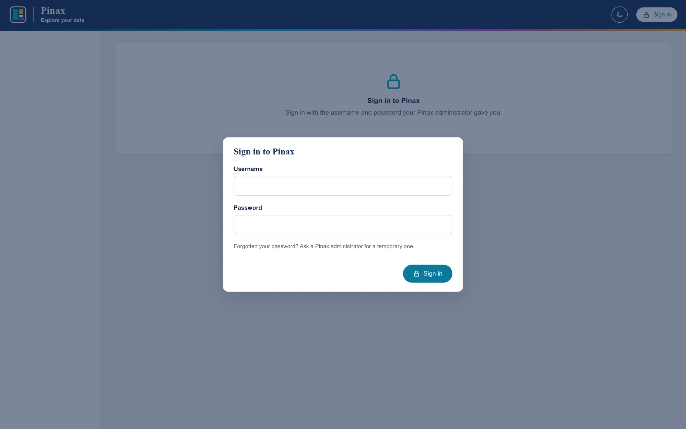
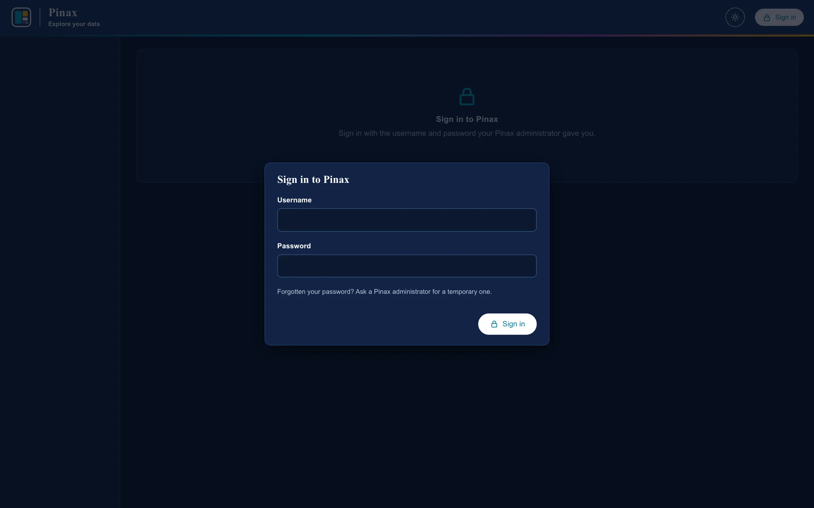

Installing on a server
Services, single sign-on or passwords, and a check that it all works.
Installing Pinax on a Linux server: the services, single sign-on, scans and keeping them, upgrades, sizing, backups, charges and statements, and operations. The files this guide installs are in deploy/. This guide is checked against the tests and a local run; the pilot installation (wave 15 in pinax-spec/roadmap.md) will confirm it on a real server.
Shape of a deployment
Signing in
browsers, and scripts with API tokens
│ HTTPS
▼
oauth2-proxy (single sign-on) or nginx/Caddy (HTTPS only)
│
▼
pinax-web, on 127.0.0.1:8001 ──reads──► catalog and indexes
Scanning and indexing (paths under /var/lib/pinax)
pinax-scan@fast.timer ──► fs-inventory ──► scans/fast/<date>/
pinax-ingest, watching scans/ ──► an index in snapshots/- Signing in is with passwords Pinax keeps, out of the box, behind an HTTPS proxy such as nginx or Caddy (Signing in). Optionally, with single sign-on, Pinax signs people in with Microsoft Entra ID, or another OpenID Connect provider, itself, behind the same HTTPS proxy (Sign-in with Entra ID); or oauth2-proxy signs them in and passes each person's username to Pinax in a header (Single sign-on with oauth2-proxy).
- Scans run where the filesystem is mounted with good metadata performance: the Pinax server itself (the
pinax-scan@timer), or a storage node or NFS client that writes into the scan folder. fs-inventory reads only metadata, never file contents. - Ingest (
pinax-ingest) watches the scan folder and builds an index from each new scan. It needs the scan folder, not the filesystem. - The web app (
pinax-web) reads only/var/lib/pinax: the catalog and the indexes. It listens on this host only, and with single sign-on believes the username header only from the proxy (PINAX_TRUSTED_PROXIES).
What you need
- A Linux server with systemd. 10 or more cores; 16 GB of memory: 8 GB for the index build while it runs, and up to 8 GB for queries (
PINAX_QUERY_MEMORY_LIMIT, every open index together); fast local SSD for/var/lib/pinax(see Sizing). - uv, which installs the Python Pinax needs (3.13).
- Read access to the filesystems' metadata from the host that scans them.
A way for people to sign in, one of:
- passwords Pinax keeps, the default: an HTTPS reverse proxy such as nginx or Caddy in front of Pinax (Signing in);
- single sign-on, optionally: an OpenID Connect identity provider (for example Microsoft Entra ID), with the same HTTPS proxy (Sign-in with Entra ID), or with oauth2-proxy 7 in front of Pinax (Single sign-on with oauth2-proxy).
The demo's persona switcher (
PINAX_AUTH_MODE=demo) lets anyone be anyone; Pinax refuses to start with it whenPINAX_ENVIRONMENT=prod.
Install
1. A user and folders
sudo useradd --system --home-dir /var/lib/pinax --shell /usr/sbin/nologin pinaxsudo install -d -o pinax -g pinax -m 0750 /var/lib/pinax /var/lib/pinax/scans2. Pinax and fs-inventory
sudo git clone https://github.com/robert-mcdermott/pinax.git /opt/pinaxcd /opt/pinax && sudo git checkout v0.14.0 && sudo env UV_PYTHON_INSTALL_DIR=/opt/pinax/.python uv sync --frozen --no-devsudo /opt/pinax/scripts/install-fs-inventory.shuv sync makes /opt/pinax/.venv, with the locked dependencies only; UV_PYTHON_INSTALL_DIR keeps the Python it installs (if the system has no 3.13) out of root's home, where the pinax user could not run it. The installer puts the pinned fs-inventory release in /opt/pinax/bin/, after checking its SHA-256 and version.
3. Settings
sudo install -d -m 0755 /etc/pinax && sudo install -m 0640 -g pinax /opt/pinax/deploy/pinax.env /etc/pinax/pinax.env/etc/pinax/pinax.env sets production mode, the data folders, and sign-in with passwords; every setting is in CONFIGURATION.md. To run pinax commands as the service does, define this in your shell:
pinax() { sudo -u pinax bash -c 'set -a; . /etc/pinax/pinax.env; exec /opt/pinax/.venv/bin/pinax "$@"' pinax "$@"; }4. Filesystems, labs, and people
Register each filesystem by the root the scan records, and how people know it if that differs:
pinax filesystem add fast /fh/fast --name Fast --description "Primary research storage"If the scanning host mounts it elsewhere (for example /mnt/fast), register that root and add --display-root /fh/fast.
Then import labs, people, memberships, and folder ownership (IMPORT.md); give IT staff is_admin true in people.csv. Look at the dry run, then apply it:
pinax import /srv/pinax/onboardingpinax import /srv/pinax/onboarding --applyWith single sign-on, usernames must be what the proxy sends (Single sign-on with oauth2-proxy): with Entra ID and the default header, the user principal name, such as jdoe@example.org. People, labs, and departments can also be added and changed one at a time under People and access, and folders mapped under Folders and labs. Someone must be added, and active, before they can sign in.
5. The services
sudo cp /opt/pinax/deploy/systemd/pinax-*.service /opt/pinax/deploy/systemd/pinax-scan@.timer /etc/systemd/system/sudo systemctl daemon-reload && sudo systemctl enable --now pinax-web pinax-ingestsudo systemctl enable --now pinax-scan@fast.timer| Unit | What it runs |
|---|---|
pinax-web.service | pinax serve on 127.0.0.1:8001 |
pinax-ingest.service | pinax ingest --watch: each new scan in PINAX_SCAN_ROOT, once (Scans) |
pinax-scan@.service, .timer | pinax scan <filesystem> --no-ingest, weekly (Sunday 01:00); one timer per filesystem |
All run as pinax, with the filesystem read-only to them except /var/lib/pinax (change ReadWritePaths if PINAX_VAR_ROOT or PINAX_SCAN_ROOT is elsewhere). The scan service has one capability, CAP_DAC_READ_SEARCH, so that it can list every directory and read every file's metadata without running as root. If scans run on another host instead, skip the timer and have that host write into /var/lib/pinax/scans (or another folder pinax-ingest watches).
6. Signing in
Out of the box, people sign in with a username and a password that Pinax keeps, hashed with scrypt (PINAX_AUTH_MODE=local, as deploy/pinax.env sets it; it is also the default outside the demo). Put an HTTPS reverse proxy in front of Pinax (nginx, Caddy, or a load balancer, forwarding to 127.0.0.1:8001): in production the session cookie is sent only over HTTPS. Let it wait longer for an answer than PINAX_QUERY_TIMEOUT (180 seconds), so a long search ends with Pinax's explanation rather than a gateway error: for nginx, proxy_read_timeout 300s; (its default is 60 seconds).
Nobody can sign in until someone has a password, so make the first administrator on the server. It prints a temporary password, which they must change when they first sign in:
pinax user add jdoe@example.org --name "Jane Doe" --email jdoe@example.org --admin(pinax here is the shell function from step 3, which runs it as the service does.)
From then on, administrators add people and give them temporary passwords under People and access; Pinax makes each password up and shows it once. A forgotten password, or an account locked after five failed sign-ins (for 15 minutes), needs a new temporary password from an administrator, or pinax user password USERNAME on the server. Sessions last 12 hours and end on signing out, on deactivation, and when a password is set or changed. Every sign-in, failure, lock, and password change is in the audit log, never the passwords. Add the reverse proxy's address to PINAX_TRUSTED_PROXIES, so the log, the audit, and each session record the person's own address from X-Forwarded-For rather than the proxy's. One limit: failures lock an account rather than slowing down an address. Scripts send API tokens instead of passwords, to /api/... or /script/api/... alike.


Sign-in with Entra ID
Optionally, a site with Microsoft Entra ID, or another OpenID Connect provider, has Pinax sign people in with it itself, behind the same HTTPS proxy as above, with no other proxy: IT registers Pinax as an application, and /etc/pinax/pinax.env takes PINAX_AUTH_MODE=oidc and the provider's settings (commented there). Pinax refuses to start until they are complete. Signing in with Entra ID has the request for IT, the settings, how to try it on a laptop with a stand-in provider, and what its errors mean.
Single sign-on with oauth2-proxy
Optionally, too, oauth2-proxy signs people in with an OpenID Connect provider, in place of the HTTPS proxy above, and passes each person's username to Pinax in a header. In /etc/pinax/pinax.env, set PINAX_AUTH_MODE=header and PINAX_AUTH_HEADER=X-Forwarded-Preferred-Username (both are there, commented), then:
- Register an application with the identity provider, with the redirect URI
https://pinax.example.org/oauth2/callback, and create a client secret. - Install oauth2-proxy 7 (7.3 or later, for
upstream_timeout) as/usr/local/bin/oauth2-proxy, and a system user for it. - Copy and edit its files:
deploy/oauth2-proxy/pinax.cfgto/etc/oauth2-proxy/pinax.cfg(tenant, client ID, email domain, address), the client secret to/etc/oauth2-proxy/client-secret, anddeploy/oauth2-proxy/pinax.envto/etc/oauth2-proxy/pinax.envwith a cookie secret. Make the secrets readable only by the oauth2-proxy user. - Start it:
deploy/oauth2-proxy/oauth2-proxy.service, if your package has no unit of its own.
oauth2-proxy signs people in, removes any user headers a browser sends, and passes the signed-in user to Pinax as X-Forwarded-User, X-Forwarded-Email, and X-Forwarded-Preferred-Username. PINAX_AUTH_HEADER says which one is the Pinax username. Pinax believes it only from PINAX_TRUSTED_PROXIES (this host, by default); the same header from anywhere else gets 401. If oauth2-proxy runs on another host, put its address in PINAX_TRUSTED_PROXIES and make Pinax listen where only that host can reach it. It waits five minutes for an answer from Pinax (upstream_timeout; its default is 30 seconds), longer than Pinax lets a request run (PINAX_QUERY_TIMEOUT, 180 seconds), so a long search ends with Pinax saying why. /api/health is open without sign-in, for monitoring. So is /script/api/, for scripts with API tokens: Pinax answers there only with a live token in the Authorization header, never the sign-on header, and the proxy passes that header on as it is (leave pass_authorization_header and set_authorization_header off). Scripts behind the proxy use https://pinax.example.org/script/api/... (API tokens for scripts).
A site moving from passwords keeps its people, labs, and memberships; passwords are no longer used. Usernames must then be what the proxy sends (with Entra ID, usually the user principal name, such as jdoe@example.org), so a site that may move should use those usernames from the start.
7. Check the installation
curl -s http://127.0.0.1:8001/api/healthIt answers {"status": "ok", ...}. Sign in as an administrator (with your password, or through oauth2-proxy) and open Scans: Automatic ingest should say Watching. Run the first scan rather than waiting for Sunday:
sudo systemctl start pinax-scan@fastWhen it has been ingested (journalctl -u pinax-ingest -f, or Scans), check its numbers against fs-inventory's own (the ID is on Scans, or from pinax snapshots):
pinax check 1